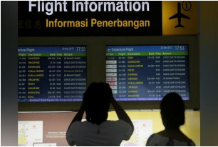
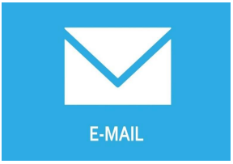

PEMANFAATAN KOMPUTER DI MASYARAKATI
1. Masyarakat
Masyarakat bisa diartikan sebagai seseorang yang harus berhubungan dengan orang lainnya di dalam suatu kumpulan atau suatu kelompok. Kehidupan masyarakat akan senantiasa berubah dan itupun tidak akan dapat dihindari. Untuk memenuhi kebutuhannya manusia memerlukan manusia lainnya, terlihat aneh apabila dalam suatu masyarakat atau kelompok yang bersifat individual. Lembaga pendidikan bisa kita contohkan sebagai masyarakat. Dimana lembaga pendidikan tidak akan bisa melakukan semua kegiatannya apabila tidak adanya interaksi satu dengan yang lainnya. lembaga pendidikan juga harus memiliki perubahan berhubungan dengan pihak lainnya, lembaga pendidikan jikalau ingin memiliki perubahan seperti pembangunan pendirian sekola, tentunya lembaga pendidikan membutuhkan jasa tukang bangunan untuk membangun gedungnya.
Beberapa pakar mengartikan masyarakat sebagai berikut :
a. Menurut Max Weber, masyarakat merupakan suatu organisasi yang memiliki struktur dimana hakikatnya memiliki nilai-nilai juga harapan pada setiap individunya.
b. Menurut Selo Soemardjan, mendefinisikan masyarakat yang berkumpul atau berkelompok bersama dan akan menghasilkan suatu kebudayaan.
c. Emile Durkheim mengartikan masyarakat sebagai suatu objektif perorangan yang berada dalam suatu perkumpulan atau kelompok. Hidupnya masyarakat apabila adanya sebuah sistem sosial atau sistematis interaksi antar sesama dimana mengharuskan adanya interaksi sesama.
Manusia dikenal mahluk yang bersosial, mereka membutuhkan satu sama lain untuk dapat hidup, tidak akan bisa menghidupi kehidupan sendiri atau individualisme dalam suatu masyarakat, apabila ada seseorang bersifat seperti itu maka akan ada timbal balik dari masyarakat itu sendiri, yaitu sebagai berikut :
a. Tentunya ada contoh dimana contoh tersebut melebihi jumlah satu orang.
b. Interaksi dari perorangan dengan isyarat.
c. Ada renggang waktu dimana fungsi tersebut untuk menentukan sifat yang sedang berjalan.
d. Memiliki suatu tujuan yang memang sudah di rencanakan.
2. Dinamika Masyarakat
Perubahan yang terjadi dengan keadaan lingkungan dinamis manusia harus benar-benar memiliki rasa menghargai satu dengan yang lainnya agar dapat hidup berkelompok dan dapat beradaptasi dengan lingkungan sekitarnya. Dimana manusia harus memaksa seluruh pikiran, keaktifan, berpikir kreatif, serta daya tahan untuk menghadapi kenyataan dalam hidup bermasyarakat. Contoh kecilnya yaitu apabila ada seseorang dalam kondisi yang sakit pastinya mencari rumah sakit untuk penanganan lanjutan, dalam kondisi lapar pastinya seseorang harus mencari tempat makan. Beberapa pakar berpendapat sama mengenai kehidupan manusia akan selalu berubah, kondisi seperti ini dinamakan sebagai perubahan sosial.
3. Pemanfaatan Komputer
Tentunya dalam kehidupan sehari-hari komputer sangat berpengaruh dan sangat berperan bagi kehidupan manusia, baik itu untuk seseorang ataupun sekelompok manusia. Dan pastinya hal ini berlaku untuk semua negara baik itu negara maju ataupun negara berkembang seperti Indonesia. Tidak ada yang berbeda dari teknologi komputer dengan teknologi lainya seperti teknologi dalam bidang transportasi seperti pesawat terbang, kapal laut, mobil, televisi dan lain sebagainya. Komputer diera masa kini sudah pasti memiliki banyak peningkatan kelebihan dari sekedar perhitungan matematika. Contoh kecil adanya sistem komputer di jasa pengiriman dengan kemampuan dapat melacak barcode barang yang telah dikirim, data center sebagai penampung ratusan bahkan jutaan data dari seluruh Indonesia.
a. Sebagai Alat Pengolah Data
Sejak dahulu hingga saat ini komputer sebagai alat pengolah data atau pemroses data, dapat dibagi menjadi 4 bagian, seperti :
1. Alat Mekanik Elektronik, dimana terdapat alat yang dapat melakukan secara otomatis dalam pergerakannya dilakukan oleh motor elektrik.
2. Peralatan Mekanik, dimana terdapat alat dalam bentuk nyata dengan mekanik yang digerakkan secara manual.
3. Peralatan manual, dimana terdapat alat yang dapat mengolah data sangat sederhana, dimana tenaga manusia menjadi objek utamanya.
4. Peralatan Elektronik, terdapat komponen alat yang bekerja secara full elektronik.
b. Komputer dalam kehidupan
Tentunya komputer memiliki manfaat di dalam kehidupan seseorang ataupun sekelompok masyarakat. Banyak sekali kita jumpai, dimana komputer sangat mempermudah pekerjaan, mempercepat pekerjaan, diantaranya :
1. Bidang Kesehatan

Manfaat pada bidang kesehatan tentunya sangat berpengaruh dan sangat mempermudah Perawat ataupun Dokter untuk memantau kesehatan pasien, contoh kecilnya yaitu melihat perkembangan bayi dalam perut ibu, aliran darah, detak jantung, memeriksa organ dalam pasien dengan sinar X dan bayak lagi lainnya
2. Bidang Transportasi

Dengan adanya komputer tentunya seluruh jadwal mulai dari penerbangan ataupun kereta dan transportasi lainnya dapat terpantau secara luas, contoh kecilnya yaitu jadwal pesawat yang tertera pada layar atau monitor besar.Bahkan pada pesawat apabila sudah mencapai ketinggian tertentu komputer sudah memprogramkan. Adanya komputer, navigasi pesawat bisa ditentukan koordinat dan diterbangkan secara otomatis. Penjualan tiketnyapun sudah dilayani komputer.
3. Bidang Pendidikan
 Dengan adanya komputer dibidang pendidikan seperti saat ini akibat dampak dari wabah virus COVID-19, tentunya komputer sangat berpengaruh dan sangat berperan aktif dalam bidang pendidikan. Dimana yang kita tahu sekolah sekarang akibat dampak virus COVID-19 siswa tidak dapat belajar bertatap muka langsung dalam kelas tetapimenggunakan metode e-learning atau belajar dari rumah masingmasing seperti yang telihat di gambar. Untuk pegawai administrasi sekolah tentunya sangat memudahkan pembuatan data-data siswa ataupun pembayaran. Mengakses Informasi Pendidikan melalui Internet.
Dengan adanya komputer dibidang pendidikan seperti saat ini akibat dampak dari wabah virus COVID-19, tentunya komputer sangat berpengaruh dan sangat berperan aktif dalam bidang pendidikan. Dimana yang kita tahu sekolah sekarang akibat dampak virus COVID-19 siswa tidak dapat belajar bertatap muka langsung dalam kelas tetapimenggunakan metode e-learning atau belajar dari rumah masingmasing seperti yang telihat di gambar. Untuk pegawai administrasi sekolah tentunya sangat memudahkan pembuatan data-data siswa ataupun pembayaran. Mengakses Informasi Pendidikan melalui Internet.
4. Bidang Jasa Pengiriman Barang

Seperti yang kita tahu bahwa saat ini tentunya sudah banyak jasa-jasa pengiriman barang seperti JNE, JNT, TIKI, Kantor Pos dan lain-lain. Mereka mengakses pengiriman dengan cepat dan lebih akurat melalui komputer. Dengan adanya komputer dan internet orang dengan mudahnya mengirimkan surat melalui email dan tidak perlu lagi repot-repot menunggu sampai berhari-hari, menjadikan dunia yang begitu besarnya mudah diakses dan dijangkau.
5. Bidang Jasa Konstruksi

dengan adanya komputer sangat memudahkan para Arsitek mendesain gambar bangunan atau rancangan konstruksi dengan gambar 2d atau 3d tentunya gambar dengan hasil yang maksimal dari segi perhitungan akurat dan tepat. Gambar konstruksi dengan mudah dibuat dengan menggunakan aplikasi seperti sketchup maupun autocad dan lain-lain.
6. Bidang Pertahanan dan Keamanan Negara
Pada bidang pertahanan tentunya komputer sangat berperan aktif di berbagai segi dalam pertahanan. Dimana komputer dapat mengendalikan senjata-senjata ataupun peluru kendali untuk pengoperasiannya.
7. Bidang Industri

Berbagai perusahaan industri pastinya komputer yang memegang kendali pada mesin-mesin yang telah didesain khusus dengan penggunaannya.
8. Bidang Jasa

Pemanfaatan komputer pada bidang jasa seperti percetakan koran atau majalah. Dimana semua pencetakan yang digunakan dengan mesin yang dimotori oleh komputer terprogram.
9. Bidang Industri Perfilman

Industri perfilman tentunya banyak sekali menggunakan komputer dalam penyuntingan filem ataupun pengeditan film. Jelas dampak dengan adanya komputer dunia perfilman yang semula hanya bergambarkan seadanya dan berwarna hitam putih sekarang sudah benar-benar berubah dan menjadi tontonan yang sering disaksikan masyarakat.
10. Bidang Industri Rekaman
Di dalam industri rekaman tentunya komputer sangat berpengaruh contoh kecil seperti penyanyi yang mungkin suaranya tidak begitu merdu bisa diedit dan dihaluskan suaranya dengan komputer menjadi lebih baik dari suara aslinya. Lalu apabila ingin mencetak album atau suatu lagu rekaman tentunya komputer yang menangani itu semua.
11. Bidang Olahraga
Pada bidang olahraga contoh kecilnya yaitu pada permainan sepak bola dimana wasit dapat melihat rekaman apabila adanya suatu pelanggaran yang tidak terlihat oleh mata kepala sang wasit.
4. Dampak Akibat Adanya Komputer
Dengan adanya komputer pastinya memiliki dampak positif ataupun negatif, dimana kita harus bisa memposisikan diri terhadap adanya komputer yang terus berkembang pada masa kini. Dengan adanya komputer tentunya kita tahu apa saja yang terjadi atau dampak dengan adanya komputer, isu sosialpun berdatangan akibat penggunaan komputer di masyarakat. Adapun beberapa dampak yang ditimbulkan di kehidupan masyarakat:
a. Dampak yang bersifat positif
1. Mendapatkan informasi yang lebih mudah dan cepat
Tentunya dengan adanya komputer kita lebih mudah mencari informasi, contohnya yaitu dengan adanya google kita dapat mencari informasi yang ingin kita selidiki lebih lanjut.
2. Berkomunikasi lebih baik
Tidak bisa dipungkiri pasti dengan adanya komputer kita menjadi lebih mudah berkomunikasi, contohnya penggunaan e-mail, smartphone dan lain sebagainya.
3. Memudahkan pekerjaan
Dengan adanya komputer yang berdampak pada pekerjaan, pasti komputer sudah banyak sekali membantu dalam bidang pekerjaan di berbagai macam pekerjaan atau berbagai bidang.
4. Transportasi yang lebih baik
Dengan adanya komputer tentunya alat transportasi semakin mudah contohnya: order ojek online.
b. Dampak negatif
1. Kurangnya sosialisasi secara langsung
Akibat perkembangan teknologi membuat orang zaman sekarang lebih sering berinteraksi secara online contohnya penggunaan facebook, instagram, dan lain-lain.
2. Data mudah dicuri
Disaat kita menyimpan data-data penting atau informasi rahasia tentunya komputer yang terkoneksi dengan internet akan dapat dicuri.
3. Pekerjaan yang digantikan oleh mesin
Disebagian besar industri banyak yang sudah diambil alih oleh mesin, dimana mesin lebih mudah dioperasikan dan dikendalikan, tidak mengenal lelah 24 jam runningpun bisa, dan tanpa gaji.
Consciousness (kesadaran) masyarakat tentunya sebagai solusi utama bagi mereka dalam mempergunakan kemajuan teknologi harus seefisien mungkin. Peranan keluarga sangatlah penting untuk menjaga satu dengan yang lainnya, peranan keluarga yang harus diperhatikan sebagai berikut :
1. Sosialisasi, keluarga merupakan hal yang harus dapat merangkul sesama keluarga, contohnya kepada anak dimana peranan orang tua harus benar-benar extra, orang tua harus dapat bersosialisasi dengan anak sebaik mungkin.
2. Skala prioritas kebutuhan teknologi, cara ini dilakukan dikarenakannya takut akan terus berkonsumsi pada produk-produk teknologi seperti komputer. Penentuan konsumsi pada teknologi harus diterapkan agar dapat memposisikan dengan benar pada suatu teknologi. Contohnya apabila pada keluarga yang sudah memiliki televisi tentunya tidak perlu masing-masing ruangan ada televisi yang sama, karena akan berdampak pemborosan.
3. Peranan orang tua yang mengharuskan tau terhadap perkembangan teknologi. Tentunya orang tua masa kini harus menjaga dan mengontrol perilaku keluarganya, contohnya yang ditakutkan dalam penggunaan internet yang bebas akses.
4. Pembimbingan orang tua kepada anak yang harus selalu diawasi dalam setiap penggunaan teknologi yang dipergunakan, khususnya dalam penggunaan internet.
5. Peranan orang tua yang harus dilakukan adalah merangkul anak atau meluangkan waktu untuk anak agar lebih erat tali hubungan antara orang tua dan anak.
6. Meningkatkan rasa kesadaran pada diri anak untuk memposisikan dirinya dengan benar, agar setiap anak dapat memanfaatkan teknologi yang ada dengan benar.
5. Isu Sosial dan Masalah yang Terjadi di Masyarakat
Semua yang terjadi dalam kehidupan pasti tidak lepas dari yang namanya dampak, baik yang bersifat positif maupun negatif. Begitu pula isu-isu yang tersebar luas dikalangan masyarakat terkait dengan komputer dan teknologi. Walaupun Komputer dan Teknologi sudah banyak membantu kegiatan manusia, namun ada saja isu yang kurang berkenaan dengan kehidupan sosial.
Beberapa jenis isu yang diangap cukup menonjol seperti :
a. Bidang Pekerjaan
Banyak yang berkata dan mengaitkan bahwa peranan komputer dapat menggeser peran manusia dalam bidang pekerjaan.
b. Bidang Kesehatan
Dengan adanya komputer dan teknologi membuat manusia jadi malas bergerak karena kemudahan-kemudahan yang bisa diberikan, sehingga dapat mengganggu kesehatan karena terlalu banyak duduk dan malas bergerak, belum lagi soal kesehatan mata juga dapat terganggu.
c. Hak Kebebasan Pribadi
Komputer dan teknologi dapat memberikan kebebasan dalam memberikan data pribadi yang dimiliki oleh masyarakat, sehingga banyak yang ketakutan datanya akan disalah gunakan.
d. Kendali yang Terpusat
Penguasa akan semakin menguasai distribusi pengelolaan data dan bisa sewenang-wenang terhadap kekuasaan mereka karena dapat mengendalikan secara terpusat semua data.
e. Tanggung Jawab
Apakah setiap masyarakat bertanggung jawab apabila ada data pribadi mereka yang tersebar luas?
Apakah tanggung jawab dari masyarakat dengan adanya teknologi dan komputer maka semua harus beralih menggunakannya?
f. Citra Diri Manusia
Apakah komputer dan teknologi dapat mempengaruhi citra diri manusia?
Apakah citra diri manusia dapat lebih menonjol karena mereka bisa menggunakan komputer?
g. Etika dan Profesionalisme
Apakah para ahli komputer memiliki etika profesi seperti layaknya dokter dan para ahli di bidang hukum?
h. Kepentingan Nasional
Apakah dengan komputer maka ekonomi di Negara tersebut akan membantu pemerintah dalam mensejahterakan masyarakat?
i. Kesenjangan keahlian
Apakah kesenjangan keahlian dapat menimbulkan persaingan di atara masyarakat ?
金村美玖

かねむら みく
Saitama, September 10 2002
On August 15th, passed the auditions to become a member of Hiragana Keyakizaka46's 2nd Generation.